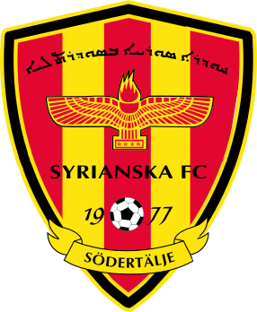

Syrianska Cupen 2026!
Syrianska Cupen förenar! Dags att återuppliva klassikern!
Allt du behöver veta
Datum
27 juni 2026
Lördag · Start kl 09:00
Plats
Bärsta IP
Södertälje
Spelform
9-manna
Gruppspel + slutspel · Offside gäller
Lagavgift
2 500 kr / lag
Inkl. mat · Max 15 spelare
Syrianska Cupen förenar!
Dags att återuppliva klassikern! Den 27 juni samlas vi på Bärsta IP i Södertälje – vi startar redan kl 09:00. Nu är det dags att samla laget och visa vilka som är bäst i landet på fotboll!
Syrianska Cupen blir mer än bara en turnering – det blir en riktig folkfest fylld med gemenskap, passion och glädje. Fotboll, rivalitet och oförglömliga matcher!
Det här ska bli en dag för hela familjen där människor från hela landet samlas för gemenskap, glädje och fotboll. Vem tar hem titeln i årets Syrianska Cup? Anmäl ditt lag redan nu och bli en del av något större!
Musik och stämning
Livemusik och härlig folkfestsstämning under hela dagen.
Grill och mat
En portion mat per spelare ingår i lagavgiften. Grill och matstånd för alla besökare.
Dansuppvisning
Uppvisning av dans och kulturella inslag under dagen.
Aktiviteter för barnen
Hoppborg, lekar, prova-på-aktiviteter och roliga överraskningar – en dag för hela familjen!
Turneringsregler och priser
Spelregler
-
Spelform9-manna
-
OffsideOffside gäller
-
Ålder16 år och uppåt (vuxenturnering)
-
SpelarbehörighetEj registrerad för spel i division 3 eller högre
-
Antal spelareMax 15 spelare per lag
-
LagnamnAnger staden, t.ex. Södertälje 1, Södertälje 2
-
DeltagandeEndast föreningar anslutna till Syrianska Riksförbundet
Priser
Matchschema
Schemat publiceras innan turneringsstart
Håll utkik här för matchschema, grupptabeller och resultat.
Arrangerat av
Syrianska Riksförbundet
Syrianska Riksförbundet (SRF) är paraplyorganisationen för syrianska föreningar i Sverige. Förbundet arbetar för att bevara och utveckla den syrianska kulturen, språket och identiteten.

Syrianska FC Södertälje
Syrianska FC är en av Sveriges mest välkända invandrarklubbar, med anor sedan 1977 i Södertälje. Klubben spelar en viktig roll som värd och medarrangör för Syrianska Cupen.
Anmäl ditt lag
Fyll i formuläret för att anmäla din förening till Syrianska Cupen 2026. Efter anmälan blir ni kontaktade för att skicka in spelarlista och betalningsinformation.
Villkor
- Anmälan gäller föreningar anslutna till SRF
- Spelare måste vara 16 år eller äldre
- Ej registrerade för div 3 eller högre
- Max 15 spelare per lag
- Lagavgiften beräknas per anmält lag
Frågor? Ring 070-739 80 97 eller maila kansli@syrianska-rf.se
Tack för din anmälan!
Vi har tagit emot er anmälan och återkommer med betalningsinformation och spelarlista.
Vid frågor: 070-739 80 97 · kansli@syrianska-rf.se
FAQ
Vem kan delta i Syrianska Cupen?
Cupen är öppen för föreningar anslutna till Syrianska Riksförbundet (SRF). Spelare måste vara 16 år eller äldre och får inte vara registrerade för spel i division 3 eller högre.
Hur anmäler man sitt lag?
Fyll i anmälningsformuläret på denna sida med föreningsnamn och kontaktuppgifter. Efter anmälan kontaktar vi er för att skicka in spelarlista och betalningsinformation.
Vad kostar det att delta?
Lagavgiften är 2 500 kr per lag. I avgiften ingår en portion mat per spelare. Lagavgiften beräknas per anmält lag. Max 15 spelare per lag.
Vilka regler gäller?
Turneringen spelas som 9-manna med offside. Det är en vuxenturnering för spelare 16 år och uppåt. Max 15 spelare per lag. Spelare får ej vara registrerade för spel i division 3 eller högre.
Hur döps lagen?
Lagnamnet anger staden. Om t.ex. två lag anmäls från Södertälje döps de till Södertälje 1 och Södertälje 2.
Vilka priser finns det?
🥇 1:a plats: 10 000 kr till föreningskassan
🥈 2:a plats: 5 000 kr till föreningskassan
🥉 3:e plats: 3 000 kr till föreningskassan
4:e plats: Avgiftsfri anmälan till nästa Syrianska Cupen
Vad händer på plats förutom fotboll?
Det blir en riktig folkfest! På plats väntar musik och härlig stämning, grill och mat, uppvisning av dans, samt prova-på-aktiviteter från olika klubbar. För barnen finns hoppborg, lekar, aktiviteter och roliga överraskningar.
Var ligger Bärsta IP?
Bärsta IP ligger i Södertälje. Se Google Maps för vägbeskrivning. Södertälje nås enkelt med pendeltåg från Stockholm.
Kontakta oss
Har du frågor om turneringen? Tveka inte att höra av dig till oss.